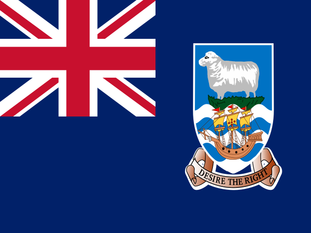
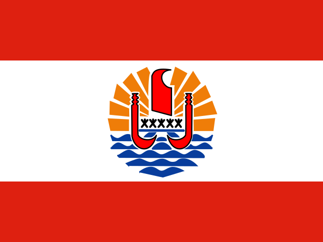
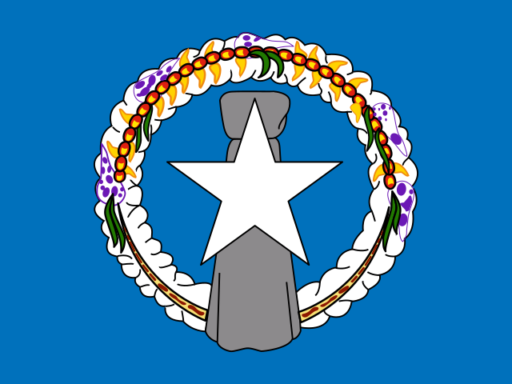
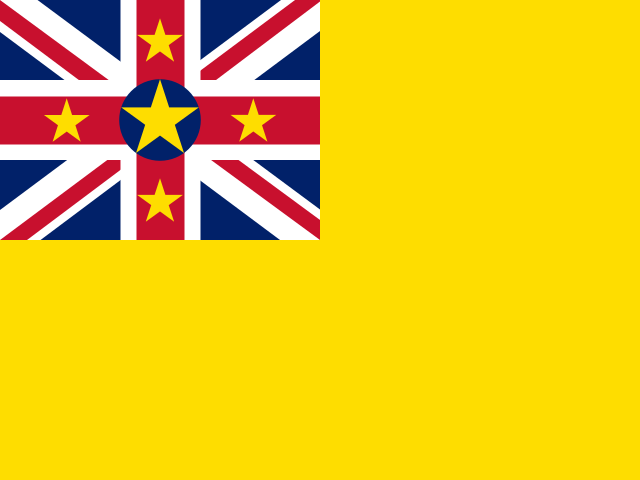
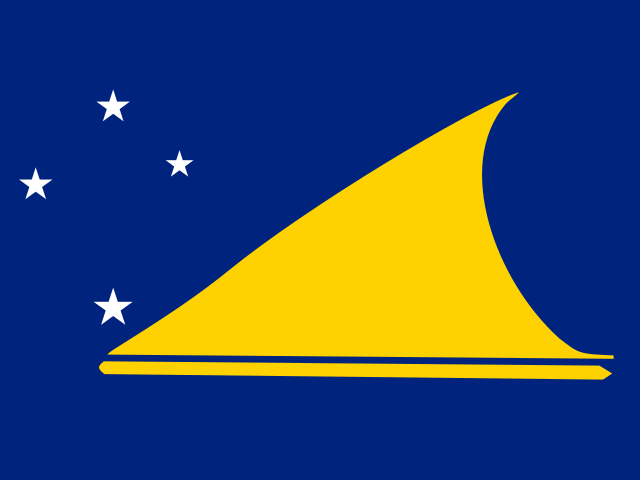

| 1 |
 |
China, Festland |
3,77 Bio. |
|
| 2 |
 |
Vereinigte Staaten |
2,19 Bio. |
|
| 3 |
 |
Deutschland |
1,76 Bio. |
|
| 4 |
 |
Niederlande |
989 Mrd. |
|
| 5 |
 |
Hongkong |
754 Mrd. |
|
| 6 |
 |
Japan |
738 Mrd. |
|
| 7 |
 |
Italien |
726 Mrd. |
|
| 8 |
 |
Südkorea |
709 Mrd. |
|
| 9 |
 |
Vereinigte Arabische Emirate |
707 Mrd. |
|
| 10 |
 |
Frankreich |
683 Mrd. |
|
| 11 |
 |
Mexiko |
665 Mrd. |
|
| 12 |
 |
Taiwan |
641 Mrd. |
|
| 13 |
 |
Belgien |
568 Mrd. |
|
| 14 |
 |
Singapur |
567 Mrd. |
|
| 15 |
 |
Vereinigtes Königreich |
556 Mrd. |
|
| 16 |
 |
Kanada |
555 Mrd. |
|
| 17 |
 |
Schweiz |
554 Mrd. |
|
| 18 |
 |
Vietnam |
473 Mrd. |
|
| 19 |
 |
Indien |
445 Mrd. |
|
| 20 |
 |
Spanien |
445 Mrd. |
|
| 21 |
 |
Russland |
419 Mrd. |
|
| 22 |
 |
Polen |
414 Mrd. |
|
| 23 |
 |
Malaysia |
376 Mrd. |
|
| 24 |
 |
Brasilien |
348 Mrd. |
|
| 25 |
 |
Thailand |
340 Mrd. |
|
| 26 |
 |
Australien |
338 Mrd. |
|
| 27 |
 |
Saudi-Arabien |
311 Mrd. |
|
| 28 |
 |
Irland |
293 Mrd. |
|
| 29 |
 |
Tschechien |
284 Mrd. |
|
| 30 |
 |
Indonesien |
283 Mrd. |
|
| 31 |
 |
Türkei |
273 Mrd. |
|
| 32 |
 |
Österreich |
222 Mrd. |
|
| 33 |
 |
Schweden |
208 Mrd. |
|
| 34 |
 |
Norwegen |
171 Mrd. |
|
| 35 |
 |
Ungarn |
169 Mrd. |
|
| 36 |
 |
Dänemark |
148 Mrd. |
|
| 37 |
 |
Slowakei |
125 Mrd. |
|
| 38 |
 |
Südafrika |
116 Mrd. |
|
| 39 |
 |
Iran |
113 Mrd. |
|
| 40 |
 |
Rumänien |
109 Mrd. |
|
| 41 |
 |
Chile |
107 Mrd. |
|
| 42 |
 |
Slowenien |
96,6 Mrd. |
|
| 43 |
 |
Irak |
92,9 Mrd. |
|
| 44 |
 |
Portugal |
89,4 Mrd. |
|
| 45 |
 |
Katar |
88,8 Mrd. |
|
| 46 |
 |
Argentinien |
87,1 Mrd. |
|
| 47 |
 |
Finnland |
84 Mrd. |
|
| 48 |
 |
Philippinen |
83,7 Mrd. |
|
| 49 |
 |
Peru |
82,7 Mrd. |
|
| 50 |
 |
Kasachstan |
78,8 Mrd. |
|
| 51 |
 |
Kuwait |
72,1 Mrd. |
|
| 52 |
 |
Israel |
59 Mrd. |
|
| 53 |
 |
Nigeria |
55,5 Mrd. |
|
| 54 |
 |
Oman |
55,3 Mrd. |
|
| 55 |
 |
Griechenland |
54,8 Mrd. |
|
| 56 |
 |
Ägypten |
51,4 Mrd. |
|
| 57 |
 |
Kolumbien |
50,1 Mrd. |
|
| 58 |
 |
Marokko |
49,8 Mrd. |
|
| 59 |
 |
Bulgarien |
48,3 Mrd. |
|
| 60 |
 |
Bangladesch |
48,2 Mrd. |
|
| 61 |
 |
Neuseeland |
46,7 Mrd. |
|
| 62 |
 |
Algerien |
45,4 Mrd. |
|
| 63 |
 |
Litauen |
41,6 Mrd. |
|
| 64 |
 |
Belarus |
41,4 Mrd. |
|
| 65 |
 |
Ukraine |
40,4 Mrd. |
|
| 66 |
 |
Serbien |
37,3 Mrd. |
|
| 67 |
 |
Ecuador |
37,2 Mrd. |
|
| 68 |
 |
Angola |
32,5 Mrd. |
|
| 69 |
 |
Demokratische Republik Kongo |
32,1 Mrd. |
|
| 70 |
 |
Kambodscha |
31,3 Mrd. |
|
| 71 |
 |
Ghana |
31,1 Mrd. |
|
| 72 |
 |
Pakistan |
30,5 Mrd. |
|
| 73 |
 |
Libyen |
30,1 Mrd. |
|
| 74 |
 |
Côte d’Ivoire |
28,5 Mrd. |
|
| 75 |
 |
Kroatien |
28,4 Mrd. |
|
| 76 |
 |
Bahrain |
26,5 Mrd. |
|
| 77 |
 |
Costa Rica |
26,4 Mrd. |
|
| 78 |
 |
Aserbaidschan |
25 Mrd. |
|
| 79 |
 |
Usbekistan |
23,7 Mrd. |
|
| 80 |
 |
Lettland |
22,1 Mrd. |
|
| 81 |
 |
Tunesien |
21,3 Mrd. |
|
| 82 |
 |
Estland |
21 Mrd. |
|
| 83 |
 |
Guyana |
18,7 Mrd. |
|
| 84 |
 |
Luxemburg |
18,4 Mrd. |
|
| 85 |
 |
Mongolei |
15,8 Mrd. |
|
| 86 |
 |
Dominikanische Republik |
15,6 Mrd. |
|
| 87 |
 |
Turkmenistan |
15,6 Mrd. |
|
| 88 |
 |
Guatemala |
15,6 Mrd. |
|
| 89 |
 |
Papua-Neuguinea |
15,5 Mrd. |
|
| 90 |
 |
Myanmar |
15,3 Mrd. |
|
| 91 |
 |
Guinea |
15,1 Mrd. |
|
| 92 |
 |
Jordanien |
14,9 Mrd. |
|
| 93 |
 |
Sri Lanka |
13,6 Mrd. |
|
| 94 |
 |
Sambia |
13,3 Mrd. |
|
| 95 |
 |
Uganda |
12,5 Mrd. |
|
| 96 |
 |
Laos |
12,4 Mrd. |
|
| 97 |
 |
Honduras |
12 Mrd. |
|
| 98 |
 |
Panama |
11,9 Mrd. |
|
| 99 |
 |
Gabun |
11,6 Mrd. |
|
| 100 |
 |
Uruguay |
11,2 Mrd. |
|
| 101 |
 |
Paraguay |
11,1 Mrd. |
|
| 102 |
 |
Burkina Faso |
11,1 Mrd. |
|
| 103 |
 |
Brunei |
10,5 Mrd. |
|
| 104 |
 |
Senegal |
10,2 Mrd. |
|
| 105 |
 |
Tansania |
9,96 Mrd. |
|
| 106 |
 |
Bosnien und Herzegowina |
9,81 Mrd. |
|
| 107 |
 |
Simbabwe |
9,71 Mrd. |
|
| 108 |
 |
Bolivien |
9,7 Mrd. |
|
| 109 |
 |
Nordmazedonien |
9,06 Mrd. |
|
| 110 |
 |
Nicaragua |
8,89 Mrd. |
|
| 111 |
 |
Kenia |
8,6 Mrd. |
|
| 112 |
 |
Venezuela |
8,6 Mrd. |
|
| 113 |
 |
Armenien |
8,4 Mrd. |
|
| 114 |
 |
Mosambik |
8,1 Mrd. |
|
| 115 |
 |
Äthiopien |
7,59 Mrd. |
|
| 116 |
 |
Republik Kongo |
7,5 Mrd. |
|
| 117 |
 |
Georgien |
7,29 Mrd. |
|
| 118 |
 |
Island |
7,17 Mrd. |
|
| 119 |
 |
Namibia |
7,02 Mrd. |
|
| 120 |
 |
Trinidad und Tobago |
6,82 Mrd. |
|
| 121 |
 |
El Salvador |
6,43 Mrd. |
|
| 122 |
 |
Zypern |
6,19 Mrd. |
|
| 123 |
 |
Dschibuti |
6,09 Mrd. |
|
| 124 |
 |
Botsuana |
5,12 Mrd. |
|
| 125 |
 |
Kamerun |
5,1 Mrd. |
|
| 126 |
 |
Mali |
4,85 Mrd. |
|
| 127 |
 |
Libanon |
4,6 Mrd. |
|
| 128 |
 |
Mauretanien |
4,51 Mrd. |
|
| 129 |
 |
Albanien |
4,35 Mrd. |
|
| 130 |
 |
Tschad |
4 Mrd. |
|
| 131 |
 |
Benin |
3,99 Mrd. |
|
| 132 |
 |
Malta |
3,82 Mrd. |
|
| 133 |
 |
Republik Moldau |
3,78 Mrd. |
|
| 134 |
 |
Syrien |
3,38 Mrd. |
|
| 135 |
 |
Kirgisistan |
2,85 Mrd. |
|
| 136 |
 |
Sudan |
2,8 Mrd. |
|
| 137 |
 |
Suriname |
2,69 Mrd. |
|
| 138 |
 |
Äquatorialguinea |
2,6 Mrd. |
|
| 139 |
 |
Madagaskar |
2,5 Mrd. |
|
| 140 |
 |
Tadschikistan |
2,49 Mrd. |
|
| 141 |
 |
Ruanda |
2,45 Mrd. |
|
| 142 |
 |
Eswatini |
2,37 Mrd. |
|
| 143 |
 |
Mauritius |
2,34 Mrd. |
|
| 144 |
 |
Nepal |
2,31 Mrd. |
|
| 145 |
 |
Liberia |
2,07 Mrd. |
|
| 146 |
 |
Färöer |
2,06 Mrd. |
|
| 147 |
 |
Niger |
1,9 Mrd. |
|
| 148 |
 |
Togo |
1,8 Mrd. |
|
| 149 |
 |
Macau |
1,73 Mrd. |
|
| 150 |
 |
Jamaika |
1,69 Mrd. |
|
| 151 |
 |
Palästina |
1,67 Mrd. |
|
| 152 |
 |
Kuba |
1,62 Mrd. |
|
| 153 |
 |
Sierra Leone |
1,53 Mrd. |
|
| 154 |
 |
Somalia |
1,3 Mrd. |
|
| 155 |
 |
Neukaledonien |
1,26 Mrd. |
|
| 156 |
 |
Fidschi |
1,13 Mrd. |
|
| 157 |
 |
Grönland |
1,01 Mrd. |
|
| 158 |
 |
Südsudan |
955 Mio. |
|
| 159 |
 |
Malawi |
947 Mio. |
|
| 160 |
 |
Afghanistan |
926 Mio. |
|
| 161 |
 |
Bhutan |
800 Mio. |
|
| 162 |
 |
Lesotho |
773 Mio. |
|
| 163 |
 |
Bahamas |
711 Mio. |
|
| 164 |
 |
Salomonen |
677 Mio. |
|
| 165 |
 |
Montenegro |
646 Mio. |
|
| 166 |
 |
Eritrea |
631 Mio. |
|
| 167 |
 |
Nordkorea |
611 Mio. |
|
| 168 |
 |
Haiti |
554 Mio. |
|
| 169 |
 |
Seychellen |
550 Mio. |
|
| 170 |
 |
Gambia |
514 Mio. |
|
| 171 |
 |
Belize |
444 Mio. |
|
| 172 |
 |
Malediven |
444 Mio. |
|
| 173 |
 |
Barbados |
428 Mio. |
|
| 174 |
 |
Curaçao |
397 Mio. |
|
| 175 |
 |
Amerikanisch-Samoa |
394 Mio. |
|
| 176 |
 |
Falklandinseln |
377 Mio. |
|
| 177 |
 |
Burundi |
332 Mio. |
|
| 178 |
 |
Guinea-Bissau |
313 Mio. |
|
| 179 |
 |
Andorra |
277 Mio. |
|
| 180 |
 |
Zentralafrikanische Republik |
255 Mio. |
|
| 181 |
 |
Gibraltar |
225 Mio. |
|
| 182 |
 |
Sint Maarten |
221 Mio. |
|
| 183 |
 |
Aruba |
216 Mio. |
|
| 184 |
 |
Jemen |
196 Mio. |
|
| 185 |
 |
Französisch-Polynesien |
175 Mio. |
|
| 186 |
 |
Mikronesien |
109 Mio. |
|
| 187 |
 |
St. Helena |
104 Mio. |
|
| 188 |
 |
Timor-Leste |
103 Mio. |
|
| 189 |
 |
Cabo Verde |
95,9 Mio. |
|
| 190 |
 |
St. Lucia |
85,4 Mio. |
|
| 191 |
 |
Vanuatu |
77,6 Mio. |
|
| 192 |
 |
Marshallinseln |
72,1 Mio. |
|
| 193 |
|
Guam |
70,6 Mio. |
|
| 194 |
 |
Komoren |
47,9 Mio. |
|
| 195 |
 |
Bermuda |
42,6 Mio. |
|
| 196 |
 |
São Tomé und Príncipe |
37,9 Mio. |
|
| 197 |
 |
St. Vincent und die Grenadinen |
37,4 Mio. |
|
| 198 |
 |
Grenada |
35,2 Mio. |
|
| 199 |
 |
St. Kitts und Nevis |
34,1 Mio. |
|
| 200 |
 |
Antigua und Barbuda |
32,4 Mio. |
|
| 201 |
 |
Nauru |
31 Mio. |
|
| 202 |
 |
Kaimaninseln |
25 Mio. |
|
| 203 |
 |
Samoa |
24,5 Mio. |
|
| 204 |
 |
Dominica |
24,1 Mio. |
|
| 205 |
 |
Kiribati |
20,4 Mio. |
|
| 206 |
 |
Anguilla |
16,6 Mio. |
|
| 207 |
 |
Britische Jungferninseln |
15 Mio. |
|
| 208 |
 |
Cookinseln |
13,6 Mio. |
|
| 209 |
 |
Tonga |
13,3 Mio. |
|
| 210 |
 |
Montserrat |
10,9 Mio. |
|
| 211 |
 |
Nördliche Marianen |
5,77 Mio. |
|
| 212 |
 |
Turks- und Caicosinseln |
4,83 Mio. |
|
| 213 |
 |
Palau |
3,03 Mio. |
|
| 214 |
 |
St. Pierre und Miquelon |
1,99 Mio. |
|
| 215 |
 |
Niue |
0,73 Mio. |
|
| 216 |
 |
Tokelau |
0,21 Mio. |
|
| 217 |
 |
Wallis und Futuna |
0,17 Mio. |
|
| 218 |
 |
Tuvalu |
0,16 Mio. |
|